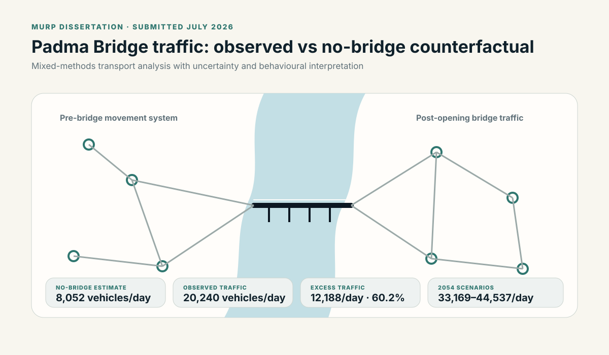
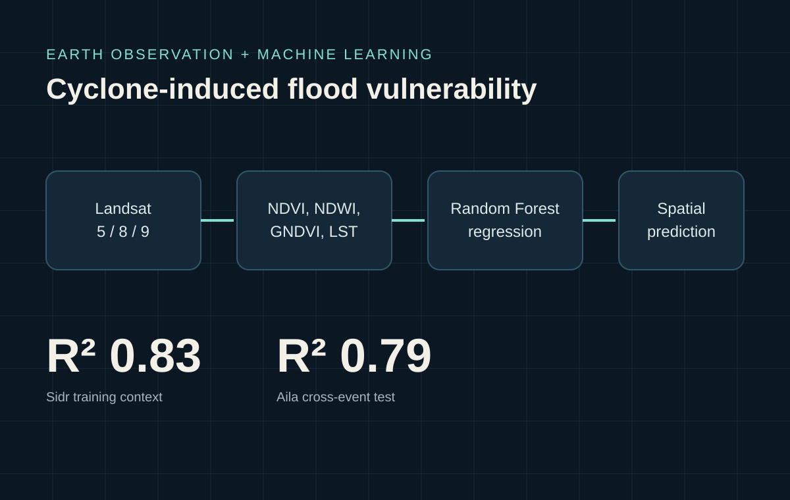
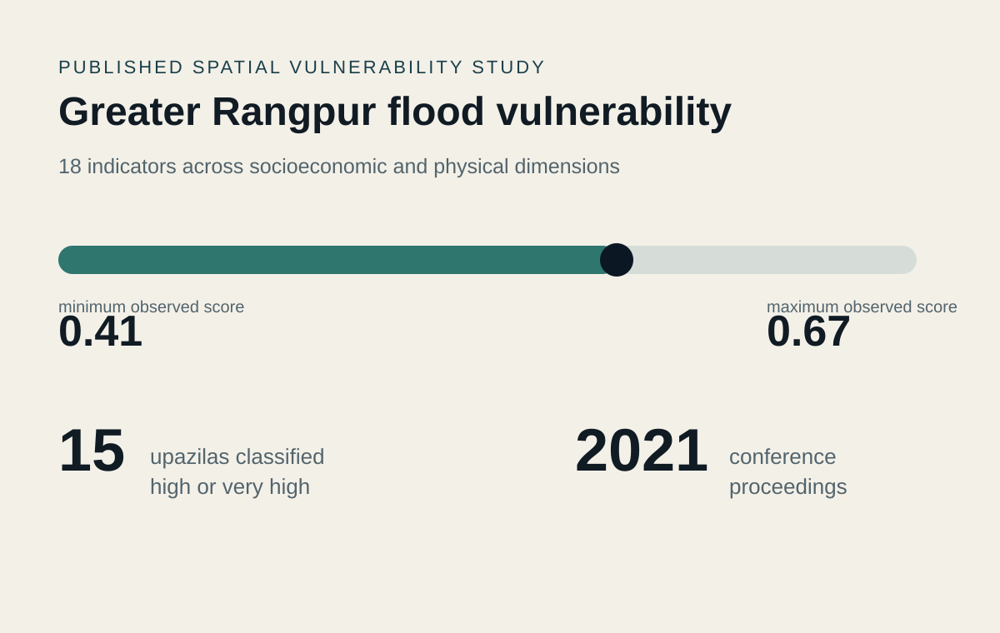

01
Transport, mobility & infrastructure
Induced travel, accessibility, route choice, infrastructure-led urban change and spatial inequality.
I study how major infrastructure and environmental change reshape mobility, urban growth and access. My work combines GIS, Earth observation, spatial modelling, mixed methods and geospatial machine learning to answer planning questions.



Across my projects, I keep returning to the same planning problem: how infrastructure and environmental change alter mobility, development patterns, exposure and access.
Induced travel, accessibility, route choice, infrastructure-led urban change and spatial inequality.
Cyclone and flood vulnerability, infrastructure exposure and access to essential services under disruption.
Earth observation, GIS, spatial modelling, machine learning, network analysis and uncertainty-aware workflows.
My selected work spans transport analysis, cyclone vulnerability and regional flood-risk mapping.
Estimated a no-bridge traffic condition, interpreted bridge-attributable excess traffic, examined behavioural mechanisms and developed uncertainty-aware long-term demand scenarios.
View research case study →Built and evaluated a remote-sensing and Random Forest workflow across coastal Bangladesh using historical cyclone scenarios and environmental indicators.
View applied research →Co-authored a regional assessment integrating socioeconomic and physical indicators for resilience-oriented planning.
View published study →I have one published conference proceedings paper. A separate manuscript on climate change-induced loss and damage is under review.
My work centers on a common planning question: how do major infrastructure and environmental changes alter mobility, development patterns, exposure and access?
Induced travel, accessibility, route choice, infrastructure-led urban change and spatial inequality.
Cyclone and flood vulnerability, infrastructure exposure and access to essential services under disruption.
Earth observation, GIS, spatial modelling, machine learning, network analysis and uncertainty-aware workflows.
These projects show complementary strengths: transport counterfactual analysis, applied geospatial machine learning and published regional vulnerability research.
Estimated a no-bridge traffic condition, interpreted bridge-attributable excess traffic, examined behavioural mechanisms and developed uncertainty-aware long-term demand scenarios.
View dissertation case study →Built and evaluated a remote-sensing and Random Forest workflow across coastal Bangladesh using historical cyclone scenarios and environmental indicators.
View applied research →Co-authored a regional assessment integrating socioeconomic and physical indicators for resilience-oriented planning.
View published study →One conference proceedings paper is published; a separate climate loss-and-damage manuscript is listed as under review.
Himel, T. I., Talukder, R. H., Hossain, M. Z., Naz, S., Arfin, S., & Fariha, J. N. In Planning for Inclusiveness and Sustainability in Post Pandemic Era. Bangladesh Institute of Planners. ISBN 978-984-35-2613-7.
Talukder, R. H., Rahman, M. A., Arfin, S., Fariha, J. N., Husna, A. U., Ha-mim, N. M., Hossain, M. Z., & Rahaman, K. R. The Journal of Environment & Development (manuscript under review).
My experience includes university research, UNDP work, qualitative field research and geospatial consulting.
Applied GIS, land-cover analysis and historical-spatial research to campus development, urban land-use change and the physical evolution of Dhaka, using maps, planning documents, photographs and archival records.
Designed a remote-sensing and machine-learning workflow for cyclone-induced flood vulnerability and translated model outputs into spatial evidence for disaster-risk and resilience planning.
Designed and conducted interviews, focus groups and key-informant interviews, then transcribed, coded and interpreted qualitative evidence for research reporting.
Digitized census-related spatial datasets, developed GIS layers and performed spatial-data quality control for administrative, settlement, infrastructure and socioeconomic data.
My teaching work covers research methods, data and research support, curriculum development and academic quality.
I use GIS, remote sensing, programming, statistics, qualitative research and transportation modelling. I choose tools around the research question rather than presenting them as a proficiency ranking.
ArcGIS Pro · QGIS · ArcPy · Google Earth Engine · ERDAS IMAGINE · Dinamica EGO · spatial analysis · LULC analysis · raster/vector processing
Python · R · SPSS · Jamovi · NVivo · Random Forest regression · quantitative analysis · qualitative coding · data visualization
TransCAD · MATSim · VISSIM · network analysis · accessibility concepts · induced-demand research · scenario evaluation
Research design · literature review · quantitative & qualitative methods · interviews · FGDs · KIIs · thematic analysis · spatial equity · ethics
AutoCAD · technical reporting · archival and historical-spatial research · cartographic and map-based research communication
For the full record of my research, teaching, service and awards, see my CV. Here I have kept the focus on education and recognition.
Khulna University, Bangladesh · 2018–2023 · CGPA 3.42/4.00
Undergraduate thesis: Predicting the Influence of the Padma Bridge on Future Urban Growth.
The full academic CV includes research projects, teaching, service and awards. The summary below keeps the homepage focused while making the evidence easy to find.
Khulna University, Bangladesh · 2018–2023
Undergraduate thesis: Predicting the Influence of the Padma Bridge on Future Urban Growth.
Top Performer, Machine Learning Applications in Remote Sensing & GIS Training (2022).
Certificate of Achievement, Khulna University (2021) · Second runner-up, Urban Design Project Competition, Bangladesh Institute of Planners (2020).
Listening 9.0 · Reading 8.5 · Writing 7.0 · Speaking 7.0
Test date: October 25, 2024.
I am interested in research-oriented graduate opportunities where I can contribute to transportation, GIS and remote sensing, spatial modelling, climate resilience and evidence-based planning.